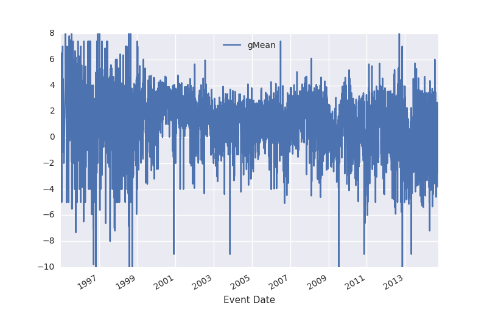
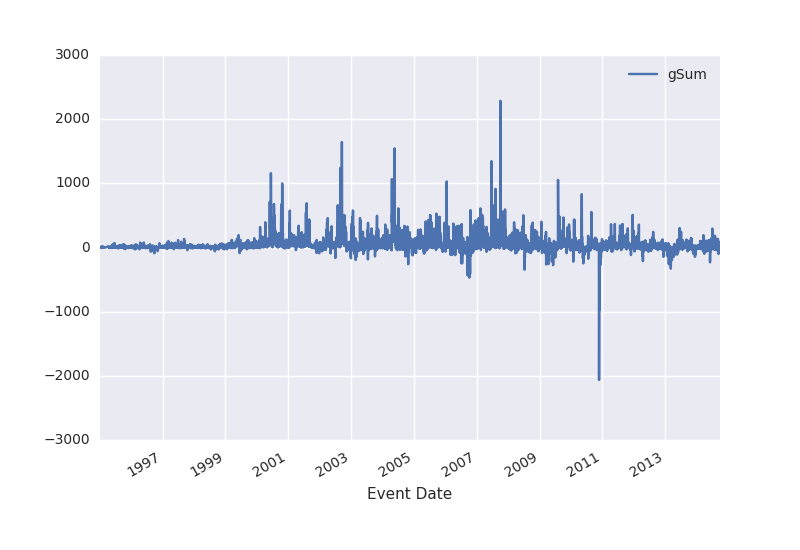
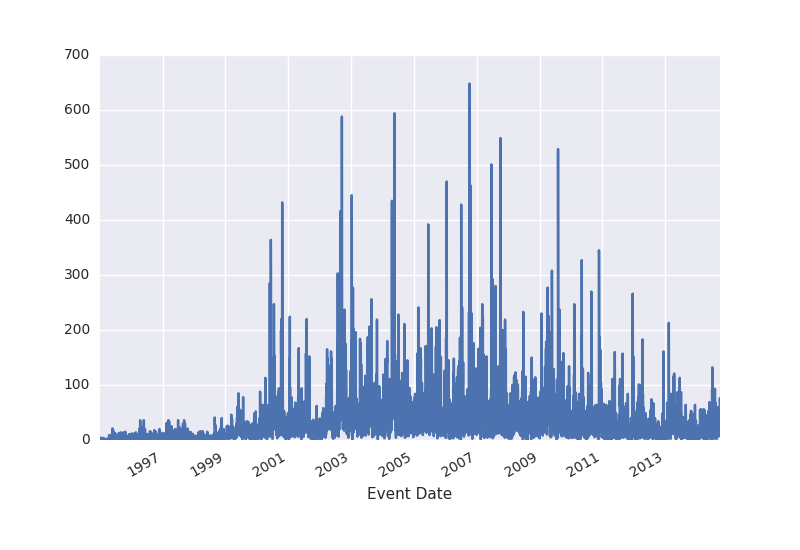

aggregation
Table of Contents
1 Setup
We are working with the data with the help of python and the pandas library.
1: import numpy as np 2: import pandas as pd 3: import matplotlib 4: matplotlib.use('Agg') 5: import matplotlib.pyplot as plt 6: import seaborn as sns; sns.plot(color_codes=True) 7: 8: d = pd.read_csv('events.northkorea.csv',sep='\t')
We are interested in the events where either the source or the target country is North Korea.
1: isSource = d['Source Country'] == 'North Korea' 2: isTarget = d['Target Country'] == 'North Korea' 3: 4: d = d[isSource | isTarget]
2 Exploring the data
2.1 Structure
ICEWS event data have the following columns:
1: d.columns
Index([u'Event ID', u'Event Date', u'Source Name', u'Source Sectors',
u'Source Country', u'Event Text', u'CAMEO Code', u'Intensity',
u'Target Name', u'Target Sectors', u'Target Country', u'Story ID',
u'Sentence Number', u'Publisher', u'City', u'District', u'Province',
u'Country', u'Latitude', u'Longitude'],
dtype='object')
A sample of the first five rows:
1: d[:5]
Event ID Event Date Source Name \
0 927032 1/5/95 Kim Young Sam
1 927031 1/5/95 Kim Young Sam
2 927033 1/5/95 North Korea
3 927111 1/5/95 Kim Jong-Il
4 927112 1/5/95 Kim Jong-Il
Source Sectors Source Country \
0 Executive Office,Government,Executive,Center R... South Korea
1 Executive Office,Government,Executive,Center R... South Korea
2 NaN North Korea
3 Parties,(National) Major Party,Government Majo... North Korea
4 Parties,(National) Major Party,Government Majo... North Korea
Event Text CAMEO Code Intensity \
0 Make an appeal or request 20 3.0
1 Make statement 10 0.0
2 Use conventional military force 190 -10.0
3 Express intent to release persons or property 353 7.0
4 Praise or endorse 51 3.4
Target Name \
0 North Korea
1 North Korea
2 Kim Young Sam
3 Foreign Affairs (United States)
4 Foreign Affairs (United States)
Target Sectors Target Country Story ID \
0 NaN North Korea 28237624
1 NaN North Korea 28237624
2 Executive Office,Government,Executive,Center R... South Korea 28237624
3 Government,Foreign Ministry,Executive United States 28241798
4 Government,Foreign Ministry,Executive United States 28241798
Sentence Number Publisher City District \
0 2 The Associated Press Political Service Seoul NaN
1 4 The Associated Press Political Service Seoul NaN
2 5 The Associated Press Political Service Seoul NaN
3 1 Reuters News NaN NaN
4 1 Reuters News NaN NaN
Province Country Latitude Longitude
0 Seoul-teukbyeolsi South Korea 37.5683 126.9780
1 Seoul-teukbyeolsi South Korea 37.5683 126.9780
2 Seoul-teukbyeolsi South Korea 37.5683 126.9780
3 Washington D.C. United States 38.9171 -77.0003
4 Washington D.C. United States 38.9171 -77.0003
2.2 Pandas Overview
Pandas gives us the following summary
1: d.describe()
Event ID CAMEO Code Intensity Story ID \
count 258465.000000 258465.000000 258465.000000 258465.000000
mean 10250022.922086 66.694903 1.345124 11028691.885044
std 5476433.304771 133.020745 3.508172 10040802.923762
min 927031.000000 10.000000 -10.000000 423.000000
25% 5655885.000000 33.000000 0.000000 3484897.000000
50% 9768434.000000 42.000000 1.900000 7944549.000000
75% 14496613.000000 51.000000 3.400000 12585791.000000
max 21920682.000000 2042.000000 10.000000 37587232.000000
Sentence Number Latitude Longitude
count 258465.000000 258465.000000 258465.000000
mean 2.928973 37.959548 102.849428
std 1.747469 8.477567 59.051402
min 1.000000 -90.000000 -175.200000
25% 1.000000 37.568300 116.397000
50% 3.000000 39.033900 125.754000
75% 4.000000 39.033900 125.804000
max 6.000000 70.383300 178.441000
2.3 Source and Target Countries
What is the most common source country? Target country?
1: d['Source Country'].value_counts()[:6]
North Korea 119607 United States 37246 South Korea 32951 China 19764 Japan 17772 Russian Federation 8596 Name: Source Country, dtype: int64
fig = plt.figure()
fig.add_subplot((d['Source Country'].value_counts()[:6] / d['Source Country'].value_counts()[:3].sum()).plot(kind='bar'))
#fig.tight_layout()
plt.savefig('sourcecounts.png')
'sourcecounts.png'
1: d['Target Country'].value_counts()[:6]
North Korea 154748 United States 26585 South Korea 25454 China 16024 Japan 12764 Russian Federation 6543 Name: Target Country, dtype: int64
fig = plt.figure()
fig.add_subplot((d['Target Country'].value_counts()[:6] / d['Target Country'].value_counts()[:3].sum()).plot(kind='bar'))
#fig.tight_layout()
plt.savefig('targetcounts.png')
'targetcounts.png'
Are there any missing data? Let's check the fill rate.
1: d.count(0)/d.shape[0] * 100
=Event ID 100.000000 Event Date 100.000000 Source Name 100.000000 Source Sectors 50.529472 Source Country 96.794924 Event Text 100.000000 CAMEO Code 100.000000 Intensity 100.000000 Target Name 100.000000 Target Sectors 35.832705 Target Country 97.828720 Story ID 100.000000 Sentence Number 100.000000 Publisher 100.000000 City 81.482599 District 2.539996 Province 86.423307 Country 100.000000 Latitude 100.000000 Longitude 100.000000 dtype: float64 ==Event ID 100.000000 Event Date 100.000000 Source Name 100.000000 Source Sectors 50.529472 Source Country 96.794924 Event Text 100.000000 CAMEO Code 100.000000 Intensity 100.000000 Target Name 100.000000 Target Sectors 35.832705 Target Country 97.828720 Story ID 100.000000 Sentence Number 100.000000 Publisher 100.000000 City 81.482599 District 2.539996 Province 86.423307 Country 100.000000 Latitude 100.000000 Longitude 100.000000 dtype: float64 =
3 CAMEO Score aggregation
We would like to aggregate the CAMEO scores of all data per some unit time into a new variable to generate our time series. The existing literature indentifies four popular ways to do that. Before we do any aggregation across dates, though, we should first change the date strings that we have to numpy datetime objects.
1: d['Event Date'] = pd.to_datetime(d['Event Date'])
Now, we'll add a new column for the sign of the intensity value (for the Goldstein counts aggregation) and group per day.
1: # add a new column to the data describing the sign of the Goldstein score 2: d['IntensitySign'] = np.sign(d.Intensity) 3: 4: perDay = d.groupby('Event Date')
3.1 DONE Goldstein mean
Using this method, Goldstein scores are averaged per unit time.
1: gMeans = pd.DataFrame(perDay.Intensity.apply(np.mean)) 2: gMeans.columns = ['gMean']
Plotted:
1: plt.figure() 2: gMeans.plot() 3: plt.savefig('gmeans.png') 4: 'gmeans.png'

3.2 DONE Goldstein sum
In this method, the Goldstein scores are summed per unit time.
1: gSums = pd.DataFrame(perDay.Intensity.apply(np.sum)) 2: gSums.columns = ['gSum']
Plotted:
1: plt.figure() 2: gSums.plot() 3: plt.savefig('gsums.png') 4: 'gsums.png'

Why are the sums so high after 2001? Maybe because there are more news stories to generate more events?
1: plt.figure() 2: perDay['Event ID'].describe().unstack()['count'].plot() 3: plt.savefig('numevents.png') 4: 'numevents.png'

3.3 DONE Goldstein counts (positive and negative)
Using this method, counts are generated for positive and negative Goldstein scores per unit time. This can be thought of as "net cooperation" and "net conflict."
1: gCounts = perDay.IntensitySign.value_counts().unstack().fillna(0) 2: gCounts.columns = ['gCount Negative','gCount Zero','gCount Positive']
Plotted:
1: plt.figure() 2: gCounts.plot() 3: plt.savefig('gcounts.png') 4: 'gcounts.png'
1: gSums.sort('gSum')
gSum
Event Date
2010-11-24 -2064.5
2010-11-23 -1625.6
2010-11-29 -977.5
2010-11-25 -828.1
2010-11-26 -609.6
2010-11-28 -549.3
2006-10-09 -469.5
2006-10-11 -447.5
2006-09-19 -437.0
2010-11-30 -414.3
2006-10-16 -410.9
2006-10-17 -401.8
2008-07-11 -345.8
2013-03-07 -329.6
2006-10-15 -326.8
2006-10-10 -319.9
2010-12-03 -313.4
2010-11-27 -293.5
2013-03-08 -280.3
2009-06-08 -275.8
2010-12-06 -272.6
2010-12-08 -269.8
2009-03-19 -263.2
2004-10-27 -261.0
2013-02-12 -260.0
2009-04-14 -259.3
2010-05-25 -247.3
2006-07-16 -247.1
2006-07-05 -244.8
2014-06-06 -231.2
... ...
2002-07-31 659.2
2007-07-03 667.0
2000-10-12 671.6
2000-07-19 678.3
2001-08-04 689.2
2000-06-01 712.3
2000-10-25 713.0
2009-08-05 714.3
2007-10-02 755.6
2000-06-16 785.2
2002-09-14 787.5
2010-05-07 831.6
2007-06-21 871.6
2000-06-13 880.3
2007-08-08 914.0
2007-10-05 922.0
2000-06-15 946.3
2000-10-24 951.3
2000-10-23 998.8
2006-01-18 1029.4
2002-09-18 1035.5
2009-08-04 1053.3
2004-04-21 1066.4
2000-06-14 1158.2
2002-08-30 1240.0
2007-06-22 1345.1
2004-05-22 1545.4
2002-09-17 1643.1
2007-10-03 1680.2
2007-10-04 2286.2
[6808 rows x 1 columns]
3.4 TODO Duvall and Thompson counts
Similar to Goldstein counts, Duvall and Thompson counts categorize events by cooperation or conflict. Duvall and Thompson counts, however, place events into four categories:
- Verbal Cooperation: The occurence of dialogue-based meetings, statements that express a desire to cooperate or appeal for assistance from other actors.
- Material Cooperation: Physical acts of collaboration or assistance, including receiving or sending aid, reducing bans and sentencing, etc.
- Verbal Conflict: A spoken criticism, threat, or accusation, often related to past or future potential acts of material conflict.
- Material Conflict: Physical acts of a conflictual nature, including armed attacks, destruction of property, assassination, etc.